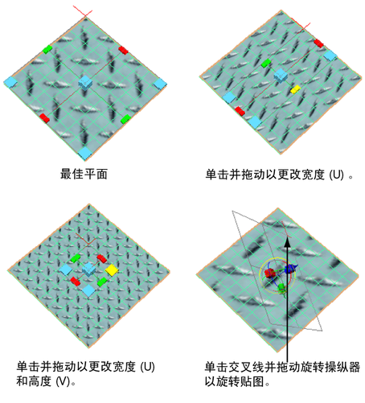

平面映射通过平面将 UV 投影到网格。该投影最适用于相对平坦的对象，或者至少可从一个摄影机角度完全可见的对象。
平面映射通常会提供重叠的 UV 壳。UV 壳可能会完全重叠，且外形类似于单个 UV 壳。在映射到单独的重叠 UV 之后，应使用。
根据平面投影映射
- 选择要将 UV 投影到的面。
- 选择“UV > 平面”(UV > Planar) >
 （如果需要设置选项），或在“UV 编辑器”(UV Editor)的“UV 工具包”(UV Toolkit)中，转到。
根据需要设定以下选项：
（如果需要设置选项），或在“UV 编辑器”(UV Editor)的“UV 工具包”(UV Toolkit)中，转到。
根据需要设定以下选项：- 单击“最佳平面”(Best Plane)，根据选择的面定位操纵器。
- 单击“边界框”(Bounding Box)，根据网格的边界框定位操纵器。
- 选择将从中投影 UV 的轴。
- 单击“投影”(Project)。
- 使用投影操纵器控制平面如何分布 UV。
- 使用“UV 编辑器”(UV Editor)以查看和编辑生成的 UV。

还可以通过单击红色交叉线旋转该操纵器，从而显示“显示操纵器工具”(Show Manipulator tool)。单击“显示操纵器”(Show Manipulator)控制柄周围的淡蓝色圆形，以激活旋转控制柄。
映射到其他平面
“最佳平面纹理工具”(Best Plane Texturing Tool)可根据从指定顶点计算得出的平面，将 UV 指定给选择的面；而不是默认轴平面。
可以在选择“最佳平面纹理工具”(Best Plane Texturing tool)之前选择要映射的面，也可以先选择该工具，然后现单击要映射的每个面。
根据选择的最佳适配平面映射
- 选择要将 UV 映射到的面。
- 选择“UV > 最佳平面纹理工具”(UV > Best Plane Texturing Tool)（如果需要设置选项），或在“UV 编辑器”(UV Editor)的“UV 工具包”(UV Toolkit)中，转到。
- 如果尚未选择面，请单击面以将其添加到选择中。不能使用蚂蚁线选择面，必须逐个选择面，或者在使用该操作之前选择面。
- 按 Enter 键。
- 选择一个或多个顶点（在网格上单击鼠标右键，然后选择“顶点”(Vertex)以切换为选择顶点）来定义投影平面。
- 按 Enter 键。
- 使用“UV 编辑器”(UV Editor)以查看和编辑生成的 UV。
从视图定义的平面中投影
- 选择要将 UV 投影到的面。
- 翻滚透视视图，或平移正交视图以观察面。
- 选择（如果需要设置选项），或在“UV 编辑器”(UV Editor)的“UV 工具包”(UV Toolkit)中，转到。
注释
- 平面映射可创建外形类似于纹理边界的共享重叠的 UV。启用纹理边界显示（在中），以清楚地显示纹理边界。
- 如果使用“3D 绘制”(3D Paint)或“绘制毛发属性”(Paint Fur Attributes)工具绘制共享重叠的 UV，则会出现接缝问题。
若要避免这些问题，请使用“UV > 排布”(UV > Layout) >
手动分离 UV。将“分离壳”(Separate shells)设定为“收拢”(Folds)，并将“壳布局”(Shell layout)选项设定为“沿 U 方向”(Along U)或“置于方形”(Into Square)。
- 投影映射每次仅在单个对象上正常工作。如果需要在单个步骤中将投影应用于多个多边形对象，请将这些对象组合为一个对象，并应用投影，然后将后面部分分离出去。否则，需在每个对象上分别执行投影。
- 如果模型的形状十分有组织，并且要求使用该模型的完整 UV 表示来进行纹理映射，则平面投影将生成重叠且扭曲的 UV。您可能需要展开 UV 以便使用它们。